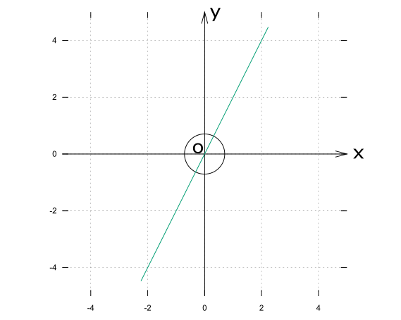

問題
[5]行列\(A = \left( \begin{array}{cc} -1 & a \\ -2 & 6 \end{array} \right) \) について, 次の(1), (2)に答えなさい。
(1) \(a=5\) のとき, \(A\) の表す1次変換によって, 自分自身にうつされる直線の方程式をすべて求めなさい。
(2) \(A\) の表す1次変換によって, 原点を中心とする円 \(C\) が長さ10の線分にうつされるとき, \(a\) の値と円 \(C\) の半径をそれぞれ求めなさい。
5-1
注目ポイント！
1次変換であるから、元像とAによる像の関係をイメージする
解答への第一歩
(i)\(y = ax + b\)の場合
元像\((x, y)\)の\(A\)による像 \((-x+5y, -2x+6y)\) が元の直線にあるから,
\(-2x+6y = a(-x+5y) + b\)
が直線上のどの点についても成立する。
\(y = ax + b\)なので、\(-2x + 6(ax + b) = a\{-x + 5(ax + b) + b\} \)が\(x\)についての恒等式という事になり,
\(\begin{eqnarray} -2x + 6ax + 6b &=& -ax + 5a(ax + b) + b \\ -2(1 - 3a)x + 6b &=& -a(1 - 5a)x + 5ab + b \end{eqnarray}\)
\(\begin{equation} \left \{ \begin{array}{c} -2(1 - 3a) &=& -a(1-5a) ･･･➀\\ 6b &=& 5ab + b\ \ \ \ \ \ ･･･➁ \end{array} \right. \end{equation}\)➀より\(a = \large \frac{2}{5} \normalsize, 1\)
\(a = \large \frac{2}{5}\) のとき, \(b = 0\)
\(a = 1\) のとき, \(b\) は任意
(ii)\(x = k\)の場合
\(k, y\) による像 \(-x + 5y, -2k + 6y\)が \(x = k\) を常に満たす\(k\)は存在しない。
以上より, 求める直線の方程式は
\(\begin{eqnarray}
y &=& x + b\ (b は任意)\\
y &=& \frac{2}{5}x
\end{eqnarray}\)
5-2
注目ポイント！
\(A\)によってうつされた像が線分である
解答への第一歩
上の図のように三角関数を用いると\((x, y) = (r\cos\theta, r\sin\theta)\) と表せるから,
\(\left( \begin{array}{cc} -1 & a \\ -2 & 6 \end{array} \right) \left( \begin{array}{c} r\cos\theta \\ r\sin\theta \end{array} \right) = \left( \begin{array}{cc} -r\cos\theta + ar\sin\theta \\ -2r\cos\theta + 6r\sin\theta \end{array} \right) \)
ここで, \(A\) による一次変換でうつされる像の点の座標を\((x', y')\)とすると, \(\left( \begin{array}{cc} x' \\ y' \end{array} \right) = \left( \begin{array}{cc} -r\cos\theta + ar\sin\theta \\ -2r\cos\theta + 6r\sin\theta \end{array} \right) \)である。
うつされた像は線分であるから傾き\(\frac{y'}{x'}\)が一定になる必要があるので,
\(\begin{eqnarray}
\frac{y'}{x'} \Large &=& \frac{-2r\cos\theta + 6r\sin\theta}{-r\cos\theta + ar\sin\theta}\\\\
&=& \frac{-2r(\cos\theta - 3\sin\theta)}{-r(\cos\theta - a\sin\theta)}
\end{eqnarray}\)
この式が一定の値となるためには, \(\cos\theta - 3\sin\theta\) と \(\cos\theta - a\sin\theta\) が約分できる必要があるから
\(a = 3\)となる。
実際に\(a\)を代入すると \(\large \frac{y'}{x'} = 2\) となるから, 下のような三角形とわかり, \(2\sqrt{5}\)倍すれば、斜辺の長さが10となる。
\(\begin{eqnarray} x' &=& -r\cos\theta + ar\sin\theta \\\\ &=& r\sqrt{1+a^2}\left\{\cos\theta\left(-\frac{1}{\sqrt{1+a^2}}\right) + \sin\theta\left(-\frac{a}{\sqrt{1+a^2}}\right)\right\}\\\\ &=& r\sqrt{1+a^2}\cos{(\theta + \varphi)}\\\\ \end{eqnarray}\)
ここで、 \(x'\) の変域は \(-1 \leqq \cos(\theta + \varphi) \leqq 1\) であるから,
\(\begin{eqnarray} r\sqrt{1+a^2} &=& \sqrt{5}\\\\ r\sqrt{1+9} &=& \sqrt{5}\\\\ r &=& \frac{\sqrt{5}}{\sqrt{10}} = \frac{1}{\sqrt{2}} \end{eqnarray}\)
以上より, \(a=3, 円Cの半径は\frac{1}{\sqrt{2}}\)と求められる。
グラフに描くと以下のようになる。(元像:円 変換された像:緑色の直線)
